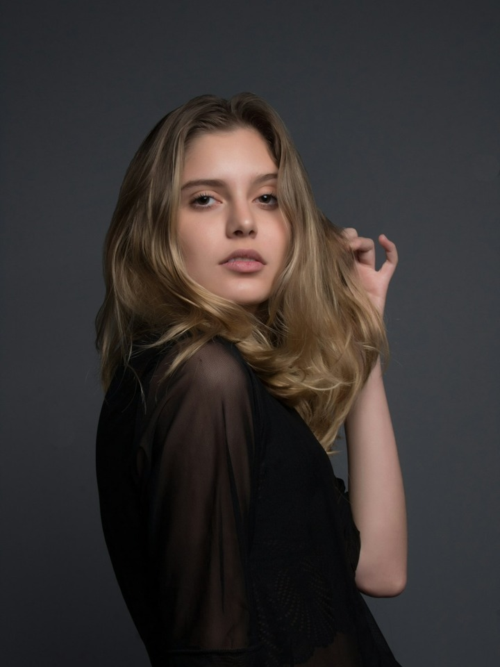

<!doctype html><html lang="en"><meta charset="utf-8"><meta name="viewport" content="width=device-width,initial-scale=1"><title>Photo guide · Prototype</title><style>
*{box-sizing:border-box}body{margin:0;background:#141516;color:#f3f1ed;font:14px -apple-system,BlinkMacSystemFont,sans-serif}button{font:inherit;cursor:pointer}button:focus-visible{outline:2px solid #eee;outline-offset:3px}.phone{width:390px;max-width:100%;height:844px;margin:32px auto;background:#202123;border:1px solid #414246;border-radius:30px;overflow:hidden;display:flex;flex-direction:column}.status{padding:17px 24px;height:50px;flex:none}header{display:grid;grid-template-columns:44px 1fr 44px;align-items:center;padding:0 16px;height:56px;flex:none}header button{border:0;background:#ffffff08;border-radius:50%;color:inherit;width:36px;height:36px;font-size:26px;display:grid;place-items:center}h1{font-size:19px;font-weight:600;text-align:center;margin:0}.content{overflow:auto;flex:1;padding:18px 20px 24px;scrollbar-width:none}h2{font-size:16px;line-height:1.4;margin:0 0 6px;font-weight:650}.section-copy{font-size:13px;line-height:1.6;color:#b8b8b8;margin:0 0 18px}.section{margin-top:30px}.good,.avoid{display:flex;gap:10px;overflow-x:auto;margin:0 -20px;padding:0 20px 4px;scroll-snap-type:x mandatory;scroll-padding-inline:20px;scrollbar-width:none}.example{margin:0;position:relative;min-width:0;scroll-snap-align:start}.good .example{flex:0 0 148px}.avoid .example{flex:0 0 104px}.image{height:196px;overflow:hidden;border-radius:12px;background:#343537;position:relative}.image img{width:100%;height:100%;object-fit:cover;display:block}.badge{position:absolute;right:7px;bottom:7px;border-radius:4px;width:20px;height:20px;display:grid;place-items:center;background:#269b70;color:#fff;font-size:15px;font-weight:700}.avoid .image{height:122px}.avoid .badge{background:#d45d54;width:18px;height:18px;font-size:14px}.avoid figcaption{font-size:11px;color:#aaa9a5;margin-top:8px}.blur img{filter:blur(4px)}.small img{position:absolute;width:40%;height:54%;left:30%;top:23%;object-fit:cover}.cropped img{transform:scale(2.5);transform-origin:50% 72%}.footer{flex:none;padding:16px 20px 28px;background:#202123}.footer button{width:100%;height:50px;border:0;border-radius:25px;background:#f3f1ed;color:#202123;font-size:15px;font-weight:600}@media(max-width:600px){.phone{margin:0;width:100%;height:100dvh;border:0;border-radius:0}}body.embedded{background:#202123}body.embedded .phone{margin:0;width:100%;height:100dvh;border:0;border-radius:0}
</style><section class="phone" aria-label="Photo guide"><div class="status">9:41</div><header><button id="back" aria-label="Back to your photos">‹</button><h1>Photo guide</h1><span></span></header><div class="content"><section aria-labelledby="good-title"><h2 id="good-title">What works best</h2><p class="section-copy" id="mode-copy"></p><div class="good" aria-label="Recommended photo examples"><figure class="example"><div class="image"><span class="badge" aria-hidden="true">✓</span></div></figure><figure class="example"><div class="image"><span class="badge" aria-hidden="true">✓</span></div></figure><figure class="example"><div class="image"><span class="badge" aria-hidden="true">✓</span></div></figure></div></section><section class="section" aria-labelledby="avoid-title"><h2 id="avoid-title">Photos to avoid</h2><p class="section-copy">Avoid photos that are blurry, taken too far away, or leave the face out of the frame.</p><div class="avoid" aria-label="Photo examples to avoid"><figure class="example"><div class="image small"><span class="badge" aria-hidden="true">×</span></div><figcaption>Too far away</figcaption></figure><figure class="example"><div class="image blur"><span class="badge" aria-hidden="true">×</span></div><figcaption>Blurry</figcaption></figure><figure class="example"><div class="image cropped"><span class="badge" aria-hidden="true">×</span></div><figcaption>Face cut off</figcaption></figure></div></section></div><div class="footer"><button id="done">Continue</button></div></section><script>
const q=new URLSearchParams(location.search),style=q.get('style')||'golden-hour',roles=style==='duo-portrait',embedded=window.parent!==window;if(embedded)document.body.classList.add('embedded');document.querySelector('#mode-copy').textContent=roles?'Choose one or two solo portraits. You can use the same photo in both positions.':'Use a solo portrait with the face visible in the frame. Choose the photo you’d like to bring into this style.';if(q.get('review')==='1')document.querySelector('#done').textContent='Back to editing';function closeGuide(){if(embedded)window.parent.postMessage({type:'camera-photo-guide-close'},location.origin);else location.replace('照片准备页_v0.3.html?style='+encodeURIComponent(style)+'&entry=create')}document.querySelector('#back').onclick=closeGuide;document.querySelector('#done').onclick=closeGuide;document.addEventListener('keydown',e=>{if(e.key==='Escape')closeGuide()});
</script></html>
